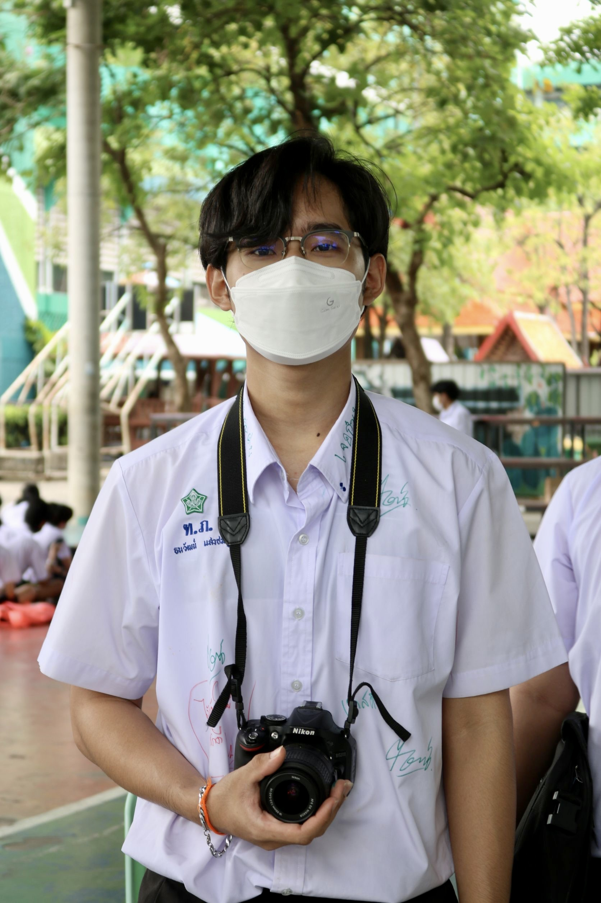

My Photo
Taweethapisek

เป็นโรงเรียนเอกชนที่ตั้งอยู่ในกรุงเทพมหานคร มีชื่อเสียงในด้านการศึกษาที่มีคุณภาพและบรรยากาศการเรียนรู้ที่ดี โรงเรียนนี้เปิดสอนตั้งแต่ระดับอนุบาลจนถึงมัธยมปลาย และมุ่งเน้นการพัฒนาทักษะทางการศึกษาและบุคลิกภาพของนักเรียน
โรงเรียนทวีธาภิเศกมีความโดดเด่นในด้านกิจกรรมเสริมการศึกษา และมักจะจัดกิจกรรมต่างๆ ที่ส่งเสริมความคิดสร้างสรรค์และทักษะการเรียนรู้ที่หลากหลาย นอกจากนี้ยังมีครูที่มีความเชี่ยวชาญและมีประสบการณ์ในการสอน เพื่อให้การศึกษาเป็นไปอย่างมีประสิทธิภาพครับ
HomePage🏠